Runtime / REFramework readout
The editor continues to use visual CMD sRGB values while the color picker also shows the decoded linear RGB value exposed at runtime. Alpha is unchanged.
Visual CMD color → runtime readout
→
Edit CMD palette files locally, inspect every slot, and export only the changes you intend.
Drop CMD files for one character and outfit.
See material color slots, values, and inactive slots.
Make a direct edit, copy a color, or repeat a pattern.
Download CMDs or build a game-ready ZIP.
Before uploading, check the filename: it tells you the character, outfit, and color number. Upload CMD files for one character and one outfit at a time. You can upload multiple color variants together.
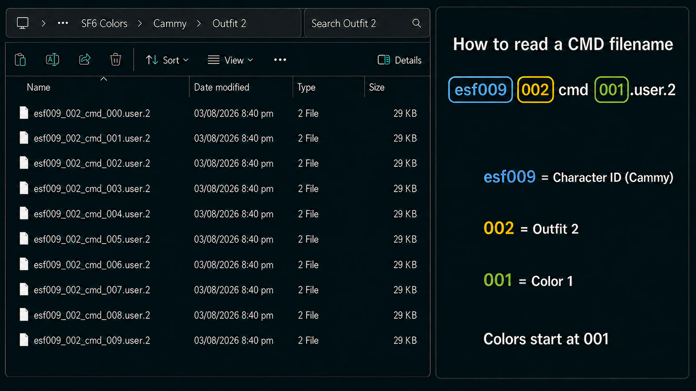
Choose an active CMD, open a material in Parsed Color Data, and edit a single CustomizeColor slot. The change affects only that palette and stays staged until you export it or revert it. Use Surprise Me on an expanded material to randomize its active colors, then keep them or discard the surprise.
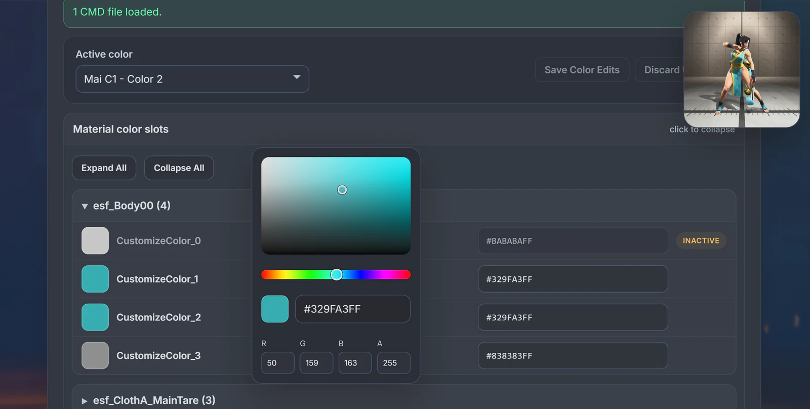
Use Color Sync to copy one source slot to one or more target slots in the active CMD. You can copy across materials and across CustomizeColor indexes. Every selected target receives the source slot's exact RGBA value.
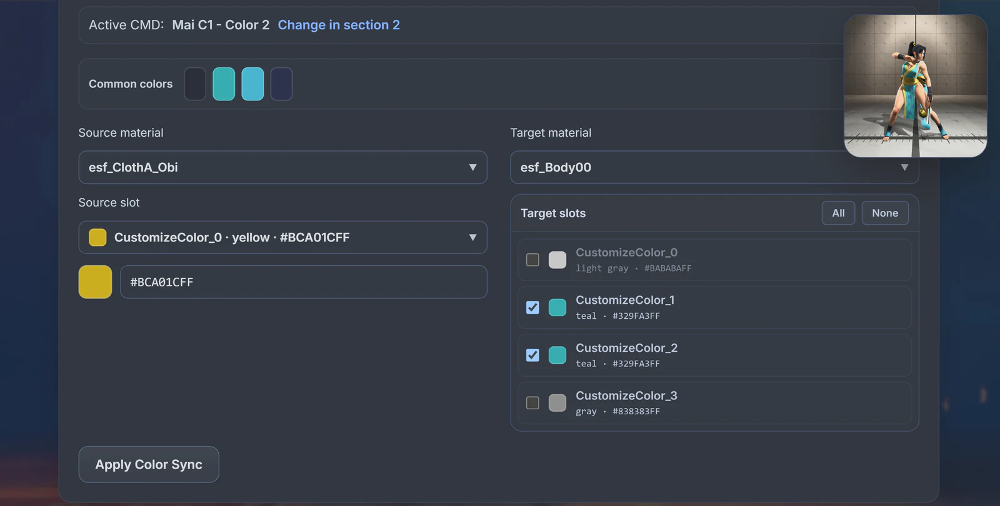
Apply one mapping to the selected Color 4 CMD.
Color 4's Chaps color is copied to its Tights slot.
Across multiple CMDs: the same mapping is repeated, but each CMD reads its own ClothB_Chaps color and applies it to the selected slots in its own target material.
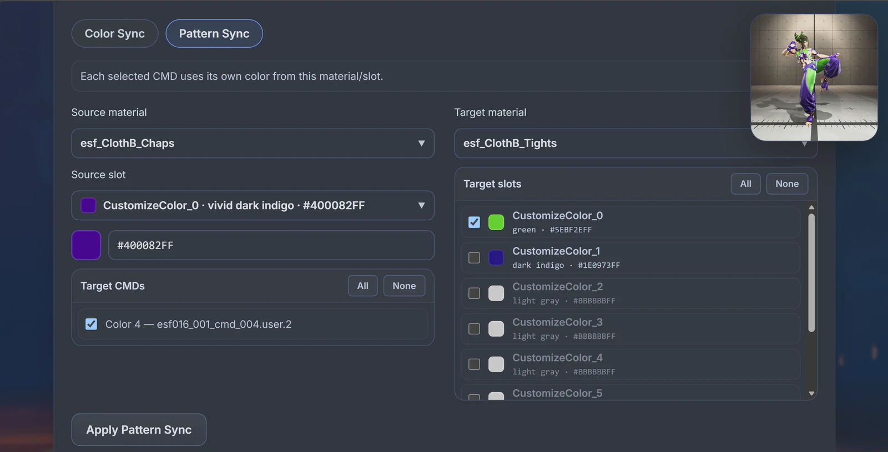
Choose a Find Color and a Replace With color. The tool searches editable slots in the active CMD only, then replaces slots whose full RGBA value exactly matches the find color. Other loaded CMDs are not changed.
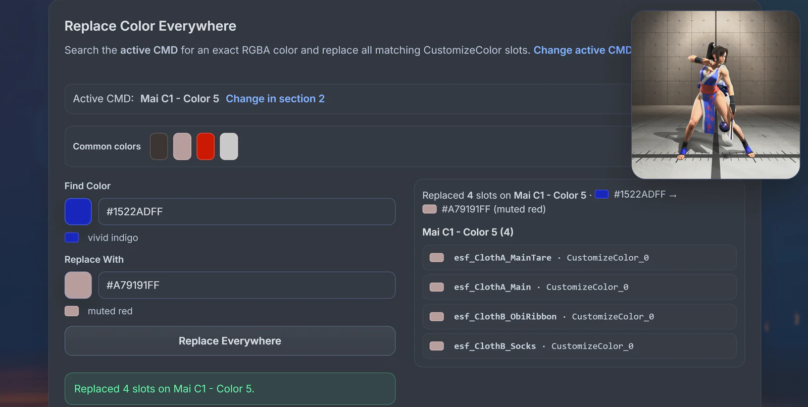
Use the + button in the reference viewer to add your own PNG, JPG, or WebP image. It is useful for a custom mod preview, a color idea, or any visual reference you want to keep beside the editor. Added images stay local to your browser session.
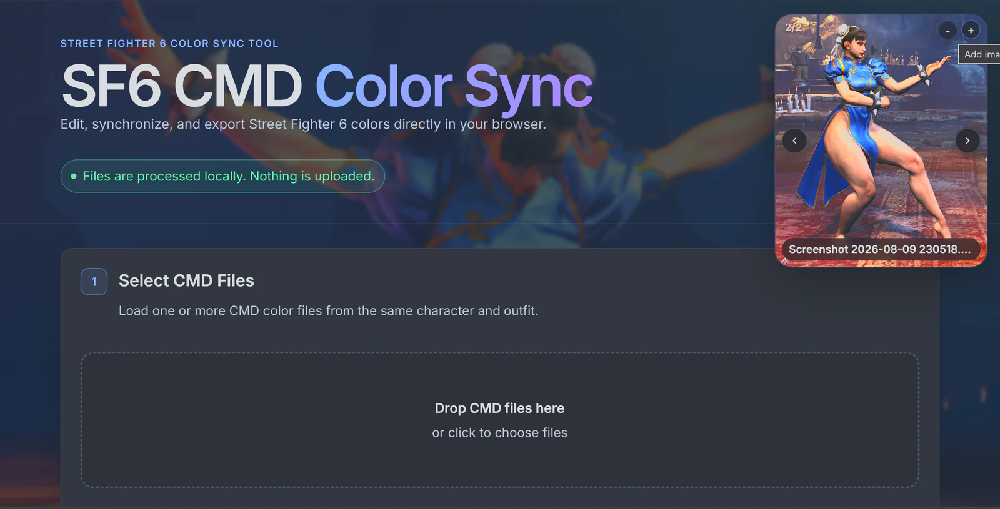
An inactive slot cannot be used as a Color Sync source, and Pattern Sync skips inactive sources. This avoids copying a color from a part of the palette that the CMD has turned off. When a sync writes to a target with an enable field, the target is enabled where possible.
Every direct edit, sync, and replacement is staged. Current Changes shows what will be exported so you can inspect an individual result, edit again, revert one change, or revert everything before creating files.
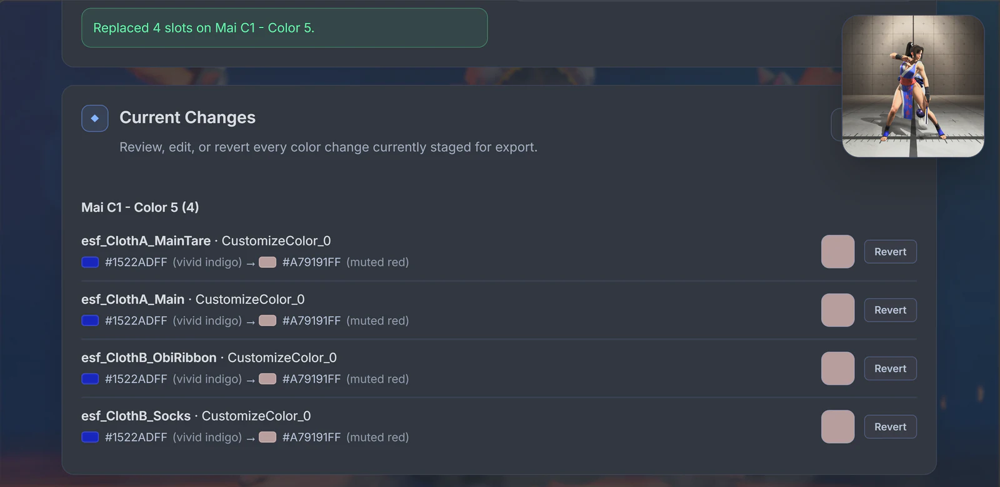
Export modified CMD files directly, or build a game-ready mod ZIP with the expected game path and mod information. Additional file options can save to a chosen folder in supported Chromium browsers; otherwise exports use the browser's normal download flow.
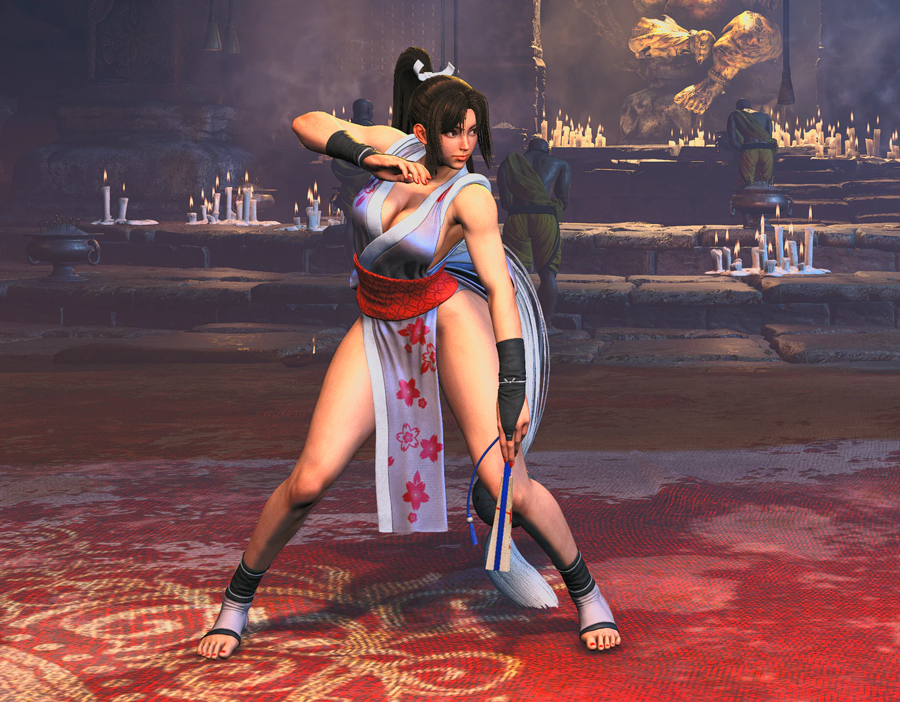
Drop an existing SF6 mod ZIP directly into Color Sync. The app finds its CMD palettes, reads the existing mod name, description, author, and screenshot, then preserves every other archive entry when you build the edited ZIP.

Whether a costume mod includes only some of Colors 1–10 or has no CMD files at all, Color Sync detects the character and outfit, keeps every palette supplied by the mod, and imports only the missing standard palettes from SF6 Colors.zip.
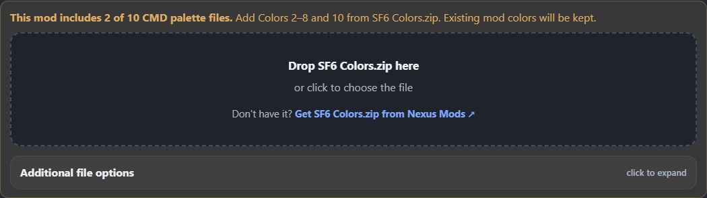
Color Sync exports carry a versioned backup history inside backup_colors. Re-import the ZIP to restore the first preserved color set or a dated pre-export snapshot. A restore remains staged, reviewable, and reversible until you build another ZIP.
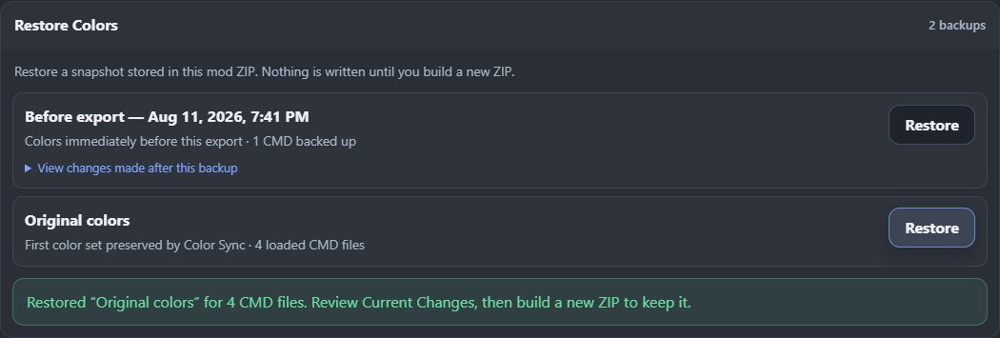
The editor continues to use visual CMD sRGB values while the color picker also shows the decoded linear RGB value exposed at runtime. Alpha is unchanged.
CMD DX files can be loaded, inspected, and edited as reference palettes. They remain clearly labeled reference-only because their changes may not apply in game.
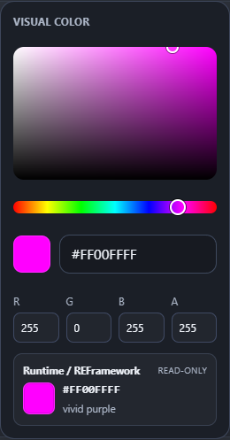